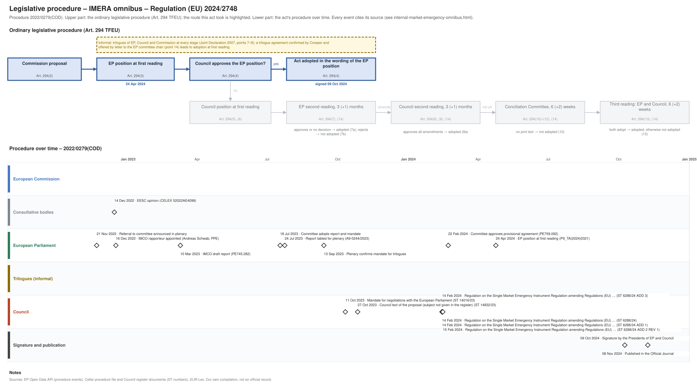

← All procedures · Regulation timeline
Procedure 2022/0279(COD), completed. Drawing: SVG · PNG · PDF (A3) · draw.io · Page as Markdown: internal-market-emergency-omnibus.md
| Stage | Completed, published 08 Nov 2024 |
|---|---|
| Latest activity | 08 Nov 2024 · Signature and publication: Published in the Official Journal |

| Date | Actor | Event | Document | Source |
|---|---|---|---|---|
| 2022-11-21 | European Parliament | Referral to committee announced in plenary | EP Open Data API, procedure 2022-0279 (REFERRAL) | |
| 2022-12-14 | Consultative bodies | EESC opinion | CELEX 52022AE4098 | Cellar procedure file 2022/279 |
| 2022-12-16 | European Parliament | IMCO rapporteur appointed (Andreas Schwab, PPE) | EP Open Data API, procedure 2022-0279 (participation RAPPORTEUR) | |
| 2023-03-10 | European Parliament | IMCO draft report | PE745.282 | EP Open Data API, procedure 2022-0279 (COMMITTEE_TABLING_REPORT) |
| 2023-07-18 | European Parliament | Committee adopts report and mandate | EP Open Data API, procedure 2022-0279 (COMMITTEE_ADOPTING_REPORT) | |
| 2023-07-24 | European Parliament | Report tabled for plenary | A9-0244/2023 | EP Open Data API, procedure 2022-0279 (TABLING_PLENARY) |
| 2023-09-13 | European Parliament | Plenary confirms mandate for trilogues | EP Open Data API, procedure 2022-0279 (PLENARY_ENDORSE_COMMITTEE_INTERINSTITUTIONAL_NEGOTIATIONS) | |
| 2023-10-11 | Council | Mandate for negotiations with the European Parliament | ST 14016/23 | Cellar procedure file 2022/279 (Council register) |
| 2023-10-27 | Council | Council text of the proposal (subject not given in the register) | ST 14832/23 | Cellar procedure file 2022/279 (Council register) |
| 2024-02-14 | Council | Regulation on the Single Market Emergency Instrument Regulation amending Regulations (EU) … | ST 6288/24 | Cellar procedure file 2022/279 (Council register) |
| 2024-02-14 | Council | Regulation on the Single Market Emergency Instrument Regulation amending Regulations (EU) … | ST 6288/24 ADD 1 | Cellar procedure file 2022/279 (Council register) |
| 2024-02-14 | Council | Regulation on the Single Market Emergency Instrument Regulation amending Regulations (EU) … | ST 6288/24 ADD 3 | Cellar procedure file 2022/279 (Council register) |
| 2024-02-15 | Council | Regulation on the Single Market Emergency Instrument Regulation amending Regulations (EU) … | ST 6288/24 ADD 2 REV 1 | Cellar procedure file 2022/279 (Council register) |
| 2024-02-22 | European Parliament | Committee approves provisional agreement | PE759.092 | EP Open Data API, procedure 2022-0279 (COMMITTEE_APPROVE_PROVISIONAL_AGREEMENT) |
| 2024-04-24 | European Parliament | EP position at first reading (Art. 294(3) TFEU) | P9_TA(2024)0321 | EP Open Data API, procedure 2022-0279 (PLENARY_AMEND_PROPOSAL) |
| 2024-10-09 | Signature and publication | Signature by the Presidents of EP and Council | EP Open Data API, procedure 2022-0279 (SIGNATURE) | |
| 2024-11-08 | Signature and publication | Published in the Official Journal | EP Open Data API, procedure 2022-0279 (PUBLICATION_OFFICIAL_JOURNAL) |
| Date | Document | Kind | Subject |
|---|---|---|---|
| 2022-12-14 | CELEX 52022AE4098 | opinion | Opinion of the European Economic and Social Committee on: (a) Proposal for a regulation of the European Parliament and of the Council establishing a Single … |
| 2023-03-10 | PE745.282 | ep-draft-report | DRAFT REPORT on the proposal for a regulation of the European Parliament and of the Council amending Regulations (EU) 2016/424, (EU) 2016/425, (EU) 2016/426, … |
| 2023-07-24 | A9-0244/2023 | ep-report | REPORT on the proposal for a regulation of the European Parliament and of the Council amending Regulations (EU) 2016/424, (EU) 2016/425, (EU) 2016/426, (EU) … |
| 2023-10-11 | ST 14016/23 | council-position | Mandate for negotiations with the European Parliament |
| 2023-10-27 | ST 14832/23 | council-text | Proposal for a REGULATION OF THE EUROPEAN PARLIAMENT AND OF THE COUNCIL amending Regulations (EU) 2016/424, (EU) 2016/425, (EU) 2016/426, (EU) 2019/1009 and … |
| 2024-02-14 | ST 6288/24 | agreed-text | Regulation on the Single Market Emergency Instrument Regulation amending Regulations (EU) 2016/424, (EU) 2016/425, (EU) 2016/426, (EU) 2019/1009 and (EU) No … |
| 2024-02-14 | ST 6288/24 ADD 1 | agreed-text | Regulation on the Single Market Emergency Instrument Regulation amending Regulations (EU) 2016/424, (EU) 2016/425, (EU) 2016/426, (EU) 2019/1009 and (EU) No … |
| 2024-02-14 | ST 6288/24 ADD 3 | agreed-text | Regulation on the Single Market Emergency Instrument Regulation amending Regulations (EU) 2016/424, (EU) 2016/425, (EU) 2016/426, (EU) 2019/1009 and (EU) No … |
| 2024-02-15 | ST 6288/24 ADD 2 REV 1 | agreed-text | Regulation on the Single Market Emergency Instrument Regulation amending Regulations (EU) 2016/424, (EU) 2016/425, (EU) 2016/426, (EU) 2019/1009 and (EU) No … |
| 2024-02-16 | PE759.092 | agreed-text | PROVISIONAL AGREEMENT RESULTING FROM INTERINSTITUTIONAL NEGOTIATIONS Proposal for a regulation of the European Parliament and of the Council amending … |
| 2024-04-24 | P9_TA(2024)0321 | ep-position | Amending certain Regulations as regards the establishment of the Single Market Emergency Instrument |
{kind=link}
{kind=link}